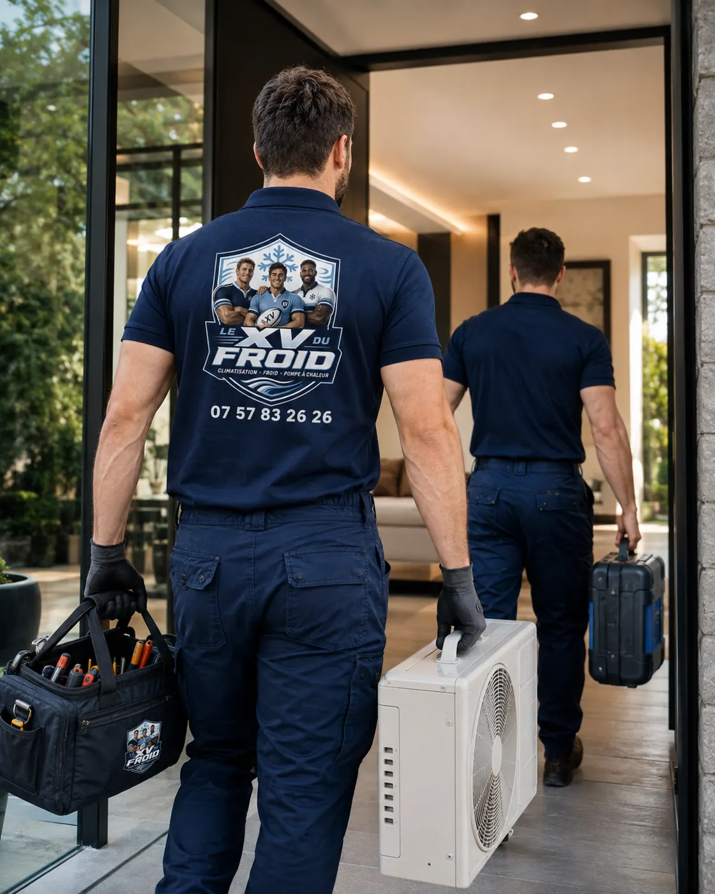

Villennes-sur-Seine · 78670 · givre et fuite d’eau
Dépannage climatisation Villennes-sur-Seine : la clim se couvre de givre et finit par goutter.
Une couche blanche sur les tuyaux, une unité qui souffle de moins en moins, puis de l’eau sur le sol : le givre est l’un des signes de panne les plus parlants. Il a trois causes principales, et on les reconnaît à ce qu’on voit.
- Givre, goutte, souffle faible
- Trois causes à distinguer
- Réparation sur place quand c’est possible

Le givre
L’eau de condensation gèle quand l’échangeur devient trop froid.
En fonctionnement normal, l’échangeur de l’unité intérieure est froid mais pas glacé. Quand l’air ne passe plus assez, ou que le fluide manque, la surface descend sous zéro, l’humidité de l’air gèle, et le givre s’épaissit.
L’appareil arrête alors de rafraîchir, parfois sans signal clair. Quand le givre fond, il goutte sur le sol ou le mur, et l’on croit à une fuite.
Pour un depannage climatisation villennes sur seine, voici comment nous remontons à la cause.

Trois causes, trois façons de les reconnaître
Si le filtre est gris et l’échangeur encrassé, le givre se forme en grand, sur toute la surface : l’air ne passe pas. Un nettoyage règle souvent le problème.
Si le ventilateur intérieur tourne lentement, que la turbine est collée de poussière ou que la sonde est déréglée, le givre se concentre à certains endroits. Le défaut est mécanique ou électronique.
Si le fluide manque, le givre apparaît d’abord sur le tuyau fin, côté groupe, et la pression basse le confirme. Il y a alors une fuite à trouver.
- Filtre et échangeur
- Ventilateur et sondes
- Pressions du circuit
À faire avant l’appel
Ce que vous pouvez faire sans outil
Quelques gestes qui aident le technicien et parfois réparent tout.
- Arrêter le refroidissement : passez en ventilation seule pendant deux heures pour que le givre fonde.
- Mettre un linge sous l’unité : l’eau qui goutte ne doit pas abîmer le mur.
- Sortir le filtre : rincez-le à l’eau tiède et laissez-le sécher complètement.
- Noter le moment : le givre arrive-t-il après une heure de marche, ou dès le démarrage ?
- Photographier : l’unité, les tuyaux, l’étiquette du groupe.
Fuite de fluide
Quand c’est le fluide frigorigène qui manque
Un circuit étanche ne perd pas de fluide. Si la pression est basse, il y a une fuite : un raccord mal serré, une soudure, un flexible fatigué. Remettre du gaz sans chercher la fuite ne fait que repousser la panne.
Notre démarche : localiser la fuite, la réparer, tirer au vide, recharger avec la quantité prévue par le fabricant, puis contrôler l’étanchéité.
Notre avis
Réparer sur place ou revenir avec une pièce
Les pannes de givre dues à l’encrassement se règlent le jour même. Celles dues à une fuite demandent parfois une seconde visite avec une pièce ou un raccord.
Si l’appareil est ancien et le circuit fatigué, nous vous disons s’il vaut mieux remplacer. Nous préférons le dire tout de suite que vous vendre une réparation qui ne tiendra pas.
Un depannage clim villennes sur seine qui se contente de rajouter du gaz n’est pas un dépannage : la fuite reste, et le givre revient.
Questions
Clim qui givre à Villennes-sur-Seine : vos questions
Ma clim est couverte de givre, puis-je la laisser tourner ?
Non. Passez en ventilation seule jusqu’à ce que le givre fonde, sinon le compresseur peut souffrir.
Pourquoi l’eau goutte-t-elle quand le givre fond ?
Le givre devient de l’eau en quantité supérieure à ce que le bac évacue. L’eau déborde alors sur le sol.
Un filtre sale peut-il causer du givre ?
Oui, c’est même la cause la plus fréquente. Un air qui ne passe plus laisse l’échangeur descendre trop bas.
Recharger en gaz règle-t-il le problème ?
Seulement si la fuite est réparée. Sinon, le manque revient et le givre aussi.
La réparation se fait-elle le jour même ?
Souvent pour un nettoyage ou un réglage. Pour une fuite ou une pièce, une seconde visite peut être nécessaire.
Faut-il être présent ?
Oui au début, pour décrire la panne, puis pour valider le résultat.
Dans votre ville
Les autres services à Villennes-sur-Seine
Un besoin différent, une page différente : dépannage, entretien, installation ou urgence.
- Installation climatisation Villennes-sur-Seine : prévoir les liaisons pendant des travaux de rénovation
- Entretien climatisation Villennes-sur-Seine : remettre en route une clim restée éteinte des mois
- Urgence climatisation Villennes-sur-Seine : odeur de brûlé, couper et ne pas rallumer
- Climatisation dans les Yvelines (78) : installation, dépannage, entretien, urgence
Autour de chez vous
Dépannage de climatisation dans les villes voisines
Si vous êtes à la limite de deux communes, lisez aussi la page d’à côté.
- Dépannage climatisation Orgeval : combles aménagés, unité sous rampant et mise en sécurité
- Climatisation Poissy : dépannage et réparation climatiseur
- Dépannage climatisation Achères : groupe extérieur en lisière de forêt, feuilles, humidité et mousse
- Dépannage climatisation Vernouillet : clim gainable qui souffle peu, bouches et caisson
- Dépannage climatisation Carrières-sous-Poissy : panne sur une clim récente, garantie et premiers contrôles
- Dépannage climatisation Verneuil-sur-Seine : reprendre une clim posée par un autre installateur
- Climatisation Les Mureaux : réparation de climatiseur mural
- Dépannage climatisation Triel-sur-Seine : la clim qui s’arrête dans une maison près de la Seine
- Dépannage climatisation Conflans-Sainte-Honorine : manque de gaz, fuite et recharge
À côté
D’autres besoins dans les communes voisines
Chaque ville a ses pages.
Nos services
Aller plus loin sur la climatisation
Les pages du site qui complètent celle-ci : services, guides pratiques et devis.
- Dépannage climatisation en Île-de-France
- Installation de climatisation : split, gainable, monobloc
- Entretien de climatisation et de clim réversible
- Demander un devis climatisation gratuit
- Toutes nos zones d’intervention
- L’entretien de la climatisation est-il obligatoire ?
- Quelle puissance de climatisation choisir ?
Où on intervient
Villennes-sur-Seine et communes voisines
Le centre, les rues pavillonnaires et les bords de Seine, ainsi que Médan, Carrières-sous-Poissy, Orgeval et Triel-sur-Seine.
Demander un dépannage à Villennes-sur-SeineÀ lire aussi
Autour de Villennes-sur-Seine
Pages voisines : dépannage Carrières-sous-Poissy, dépannage Triel-sur-Seine.
Transparence
Un devis clair avant toute intervention.
Vous savez ce qui est prévu, pourquoi c’est nécessaire et à quel tarif avant que le technicien commence. Puis contrôles et essais avant son départ.